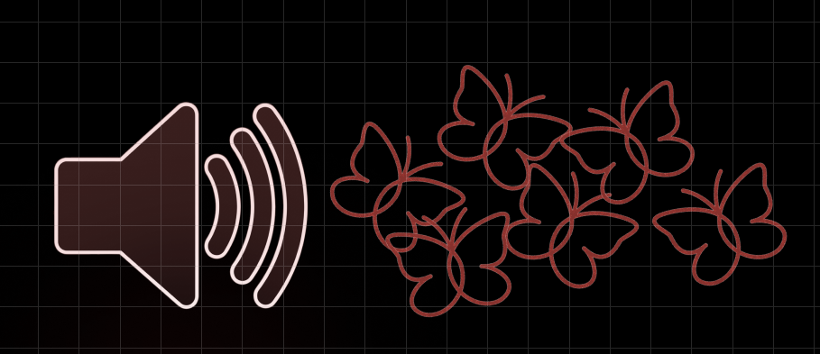
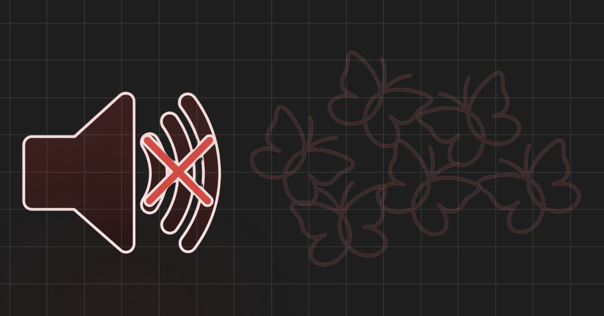

UI work for Unraveling, a tense, paranoia-themed game built by GT's video game development club. I design the overlays and controls in Figma so they match the game's dark tone while staying clear to read during play.

Paranoia overlay. I designed this screen overlay to make the player feel watched and on edge as they move through the game. I built it in Figma so it sits inside the game's dark visual language and holds up over whatever is happening on screen.


Music toggle. I designed the in-game music control, drawing both the on and muted states so a player can tell at a glance whether sound is playing. Keeping the two states visually consistent makes the control easy to read and keeps it in step with the rest of the game's interface. The two states are shown together here.
Unraveling needed interface elements that hold the game's tense, paranoid mood without getting in the way of play.
Design UI overlays and controls that reinforce the atmosphere and stay readable during gameplay.
I built a paranoia overlay and a music toggle in Figma, then revised both based on feedback from the team of more than 100 members working on the game.
Interface pieces that match the game's look and give players clear feedback, contributed as part of a large club project.
- 🎭 A paranoia-themed overlay that holds the game's mood
- 🔊 An in-game music toggle with clear on and muted states
- 🤝 Worked within a team of more than 100 members
- 🔁 Revised designs based on team feedback